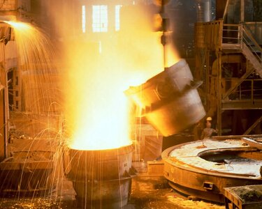
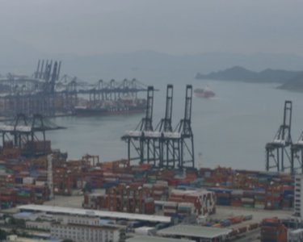

Willkommen auf der Website von der Eisenau-AG
Über uns:
Die Eisenau-AG ist eine neu gegründete AG, die sich auf die Herstellung von Waffensystemen konzentriert.
Gerade in der heutigen Zeit sind qualitativ hochwertige Waffen von großer Bedeutung.
Alles was aus Eisen und Stahl ist, ist unser Job!
Wir produzieren Panzer jegliche Art!
Der Leopard 2A7V ist der
wichtigste Panzer der Bundeswehr
und gilt als bester Panzer der Welt.
Er ist auf dem neuesten Stand der Technik und damit gegen
alle modernen Waffen gewappnet.
Auch wenn der Tiger I schon über 80
Jahre alt ist, heißt das nicht, dass er
auf den Schlachtfeldern nichts mehr zu suchen hat.
Einst als der beste Panzer der Welt bekannt, ist der Tiger I heute billig herzustellen.
Die russische T34 ist leicht
in der Masse und einfach zu
warten. Er eignet sich hervorragend
für einen Sturmangriff, um den Feind im Winter zu vernichten.
Ein Mörser, der auf den Ketten eines Tigers befestigt ist.
Unser Sortiment besteht nicht nur aus Panzer
Die Kar98K ist ein leicht herstellbares und preiswertes Gewehr.
Perfekt für die Ausrüstung von Massen.
Die MP40, auch bekannt als Ghettoblaster, ist eine Maschinenpistole,
die sich ideal für enge Gassen und Spaziergänge in fremden Vierteln eignet.
Willst du einen Strand verteidigen?
Oder lieber einen Baum fällen?
Das MG42, auch Kettensäge genannt, schafft das mit seinen 1.200 Schuss pro Minute problemlos.
Das Hauptsturmgewehr der Bundeswehr.
Es ist einfach zu bedienen und hat ein relativ großes Magazin. Perfekt für den Durchschnittsmann.
Eine russische Waffe. Robust und billig.блядь.
"plays:" Soiuz nerushimyj respublik svobodnykh
Splotila naveki Velikaia Rus.
Schwere Geräte
800 mm Geschoss. 1.350t Gewicht. Mehr ist dazu nicht zu sagen
17.000 PS, 1000 t und ein Gneisenau-Geschütz. Bis zum Ende gepanzert und unglaublich groß.

Ich bin positiv überrascht, wie gut die Waffen der Eisenau-AG sind. Sie sind besonders gut gegen Linksextremisten und Tunnelgräber.
Ich bin positiv überrascht, wie gut die Waffen der Eisenau-AG sind. Sie sind besonders gut gegen Rechtsextremisten.

Die Geschosse haben eine gute Sinuskurve. Mathe ist Leben!
Mit diesen Waffen kann ich mein Mutterland zurückerobern.
Nie war es einfacher, gegen die Genfer Konvention zu verstoßen


.jpg)